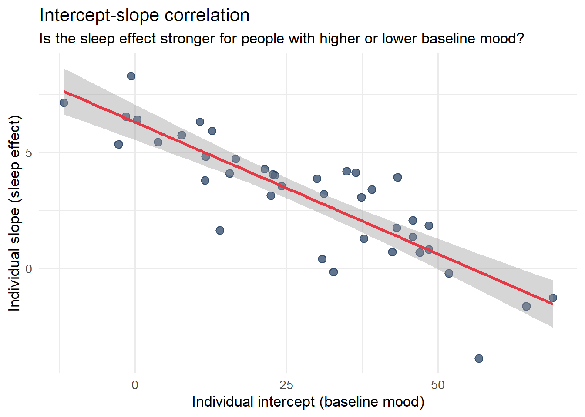
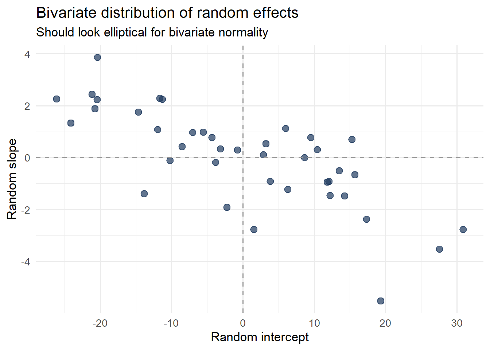

The random-intercept model assumes that the slope — the relationship between the predictor and the outcome — is identical across all units. Everyone’s mood responds to sleep in exactly the same way; only their baseline mood differs.
But is that realistic?
Some people are highly sensitive to sleep: one bad night and they feel terrible. Others are remarkably resilient: they function almost the same regardless of how much they sleep. The magnitude of the sleep-mood relationship varies across people. If we force a single slope for everyone, we are misrepresenting the data-generating process.
The random-slope model allows the slope to vary across units, treating individual slopes as draws from a distribution.
The new component is \(u_{1j}\): each unit’s deviation from the average slope. We estimate \(\gamma_{10}\) (the average slope), \(\sigma^2_{u_0}\) (variance in intercepts), \(\sigma^2_{u_1}\) (variance in slopes), and crucially — \(\sigma_{u_0 u_1}\) (the correlation between intercepts and slopes).
Code
n_people <-40n_days <-7person_intercepts <-rnorm(n_people, mean =50, sd =8)person_slopes <-rnorm(n_people, mean =3, sd =2.5) # slopes vary!df <-expand_grid(person =1:n_people,day =1:n_days) |>mutate(sleep =rnorm(n(), mean =7, sd =1.5),mood = person_intercepts[person] + person_slopes[person] * (sleep -7) +rnorm(n(), 0, 5),person =factor(person) )# Random intercept onlymodel_ri <-lmer(mood ~ sleep + (1| person), data = df)# Random intercept + slopemodel_rs <-lmer(mood ~ sleep + (sleep | person), data = df)# Comparebroom.mixed::tidy(model_rs, effects ="ran_pars") |> knitr::kable(digits =3, caption ="Variance components: random intercepts and slopes")
The grey lines show enormous variation in how strongly sleep predicts mood across people. The red line — the fixed effect — is the average story. But for some people, the relationship is strong; for others, nearly flat. A model that forces a single slope misses this heterogeneity entirely.
11.3 The Intercept-Slope Correlation
The random-slope model also estimates the correlation between intercepts and slopes: \(\rho_{u_0, u_1}\).
This is substantively meaningful. A positive correlation would mean people with higher baseline mood also benefit more from sleep. A negative correlation would mean people with low baseline mood are more sensitive to sleep deprivation.
Code
# Plot the intercept-slope relationshipggplot(person_lines, aes(x = intercept, y = slope)) +geom_point(size =3, color ="#1e3a5f", alpha =0.7) +geom_smooth(method ="lm", color ="#e63946", se =TRUE) +labs(title ="Intercept-slope correlation",subtitle ="Is the sleep effect stronger for people with higher or lower baseline mood?",x ="Individual intercept (baseline mood)",y ="Individual slope (sleep effect)" ) +theme_minimal(base_size =13)

11.4 The Assumptions of Random-Slope Models
WarningAssumption 1: Multivariate Normality of Random Effects
What it means: The random intercepts and slopes are jointly drawn from a bivariate normal distribution: \[\begin{pmatrix} u_{0j} \\ u_{1j} \end{pmatrix} \sim \mathcal{N}\left(\begin{pmatrix} 0 \\ 0 \end{pmatrix}, \begin{pmatrix} \sigma^2_{u_0} & \sigma_{u_0 u_1} \\ \sigma_{u_0 u_1} & \sigma^2_{u_1} \end{pmatrix}\right)\]
How to check: Plot the estimated random effects (from ranef()) as a scatterplot. Look for elliptical distributions, not banana-shaped or clustered patterns.
Code
re_df <-as.data.frame(ranef(model_rs)$person)names(re_df) <-c("intercept", "slope")ggplot(re_df, aes(x = intercept, y = slope)) +geom_point(size =3, color ="#1e3a5f", alpha =0.7) +geom_hline(yintercept =0, linetype ="dashed", color ="gray60") +geom_vline(xintercept =0, linetype ="dashed", color ="gray60") +labs(title ="Bivariate distribution of random effects",subtitle ="Should look elliptical for bivariate normality",x ="Random intercept",y ="Random slope" ) +theme_minimal(base_size =13)

WarningAssumption 2: The Correct Random Effects Structure is Specified
What it means: The model must include random slopes for every predictor whose effect varies meaningfully across units. Failing to include a necessary random slope biases standard errors downward — producing anti-conservatively small p-values.
Judd, Westfall, & Kenny (2012, 2017) showed that omitting random slopes that should be in the model is one of the most common sources of Type I error inflation in experimental psychology, particularly when stimuli are treated as fixed rather than random.
How to check: Likelihood ratio tests (LRT) comparing models with and without the random slope. If the LRT is significant, the random slope is needed.
Code
# Test: does adding the random slope significantly improve fit?model_ri_refit <-lmer(mood ~ sleep + (1| person), data = df, REML =FALSE)model_rs_refit <-lmer(mood ~ sleep + (sleep | person), data = df, REML =FALSE)anova(model_ri_refit, model_rs_refit)
npar
AIC
BIC
logLik
-2*log(L)
Chisq
Df
Pr(>Chisq)
model_ri_refit
4
1917.698
1932.237
-954.8492
1909.698
NA
NA
NA
model_rs_refit
6
1882.249
1904.058
-935.1247
1870.249
39.44899
2
0
Note: use REML = FALSE when comparing models with likelihood ratio tests. Switch back to REML = TRUE for final parameter estimation.
WarningAssumption 3: Convergence
What it means: Complex random-slope models — especially with many predictors and crossed random effects — frequently fail to converge. A convergence warning from lme4 means the optimization algorithm did not find a stable minimum. Estimates from non-converged models should not be trusted.
How to check: Look for convergence warnings in lmer() output. Use check_convergence() from the performance package.
What to do if it fails: - Rescale continuous predictors (center and divide by SD) - Simplify the random effects structure (remove the correlation between intercept and slope: use (1 | person) + (0 + sleep | person)) - Try alternative optimizers: control = lmerControl(optimizer = "bobyqa") - Switch to Bayesian estimation (brms), which is more robust for complex models
Code
library(performance)check_convergence(model_rs)
[1] FALSE
attr(,"gradient")
[1] 0.001721297
11.5 Model Comparison: Do You Need Random Slopes?
Adding random slopes adds parameters and complexity. You should include them when:
Theory predicts heterogeneous effects: Do you have a reason to believe the relationship varies across units?
The LRT supports them: The model with random slopes fits significantly better than the model without.
The design requires them: In within-subject experimental designs, random slopes for experimental conditions are almost always needed (see Module 5).
11.6 Recommended Reading
Topic
Citation
Random slopes in experimental designs
Barr, D. J., Levy, R., Scheepers, C., & Tily, H. J. (2013). Random effects structure for confirmatory hypothesis testing: Keep it maximal. Journal of Memory and Language, 68(3), 255–278.
When random slopes matter
Heisig, J. P., & Schaeffer, M. (2019). Why you should always include a random slope for the lower-level variable involved in a cross-level interaction. European Sociological Review, 35(2), 258–279.